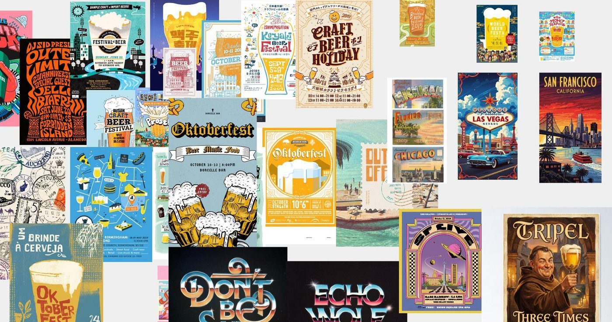
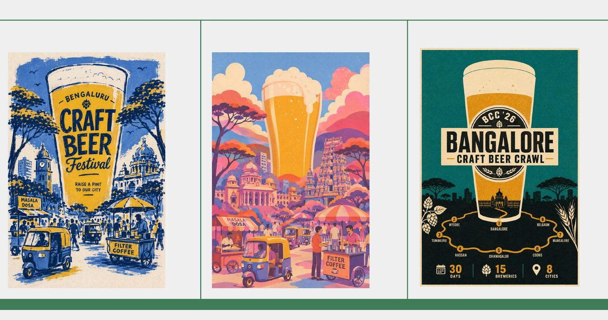
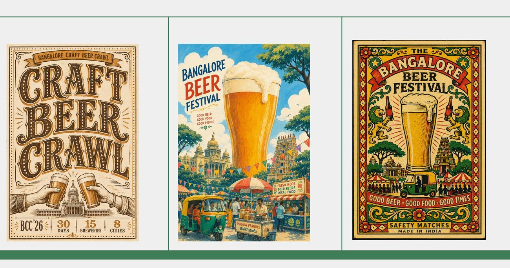
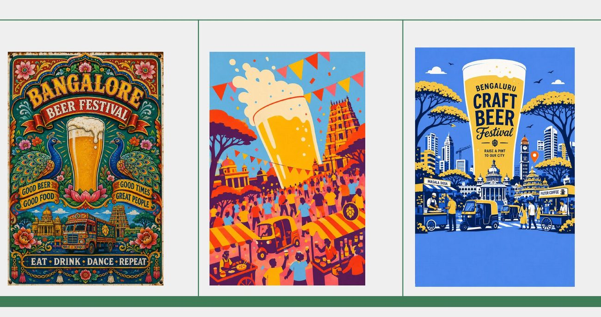
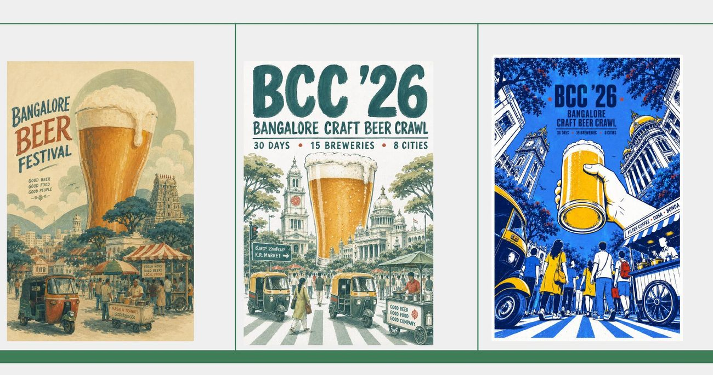
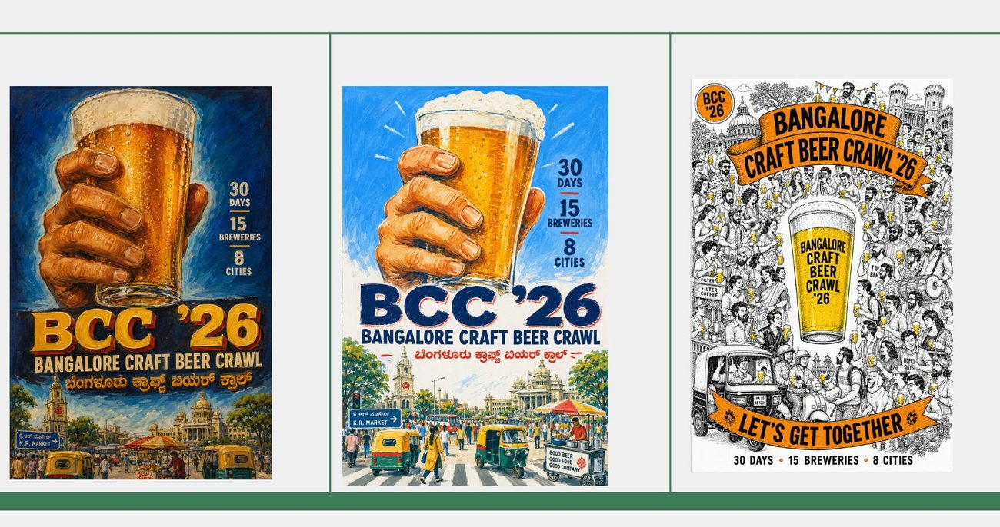
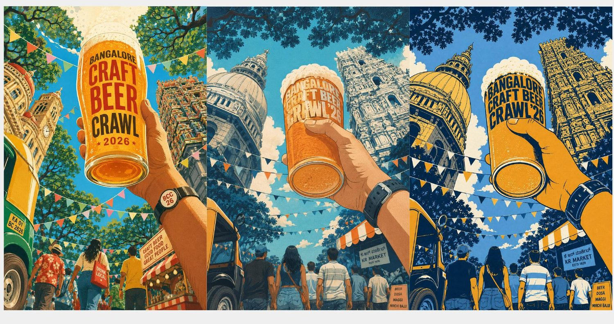
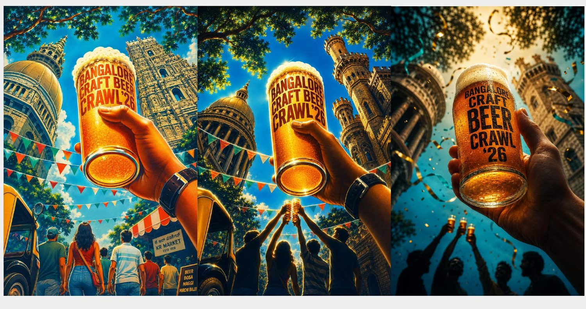
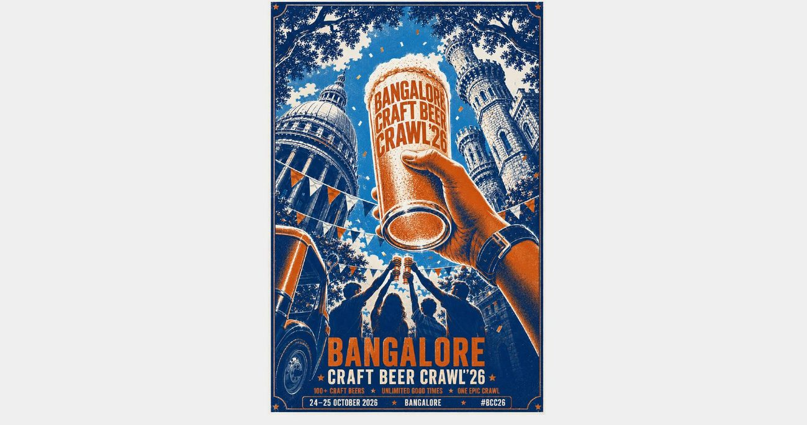
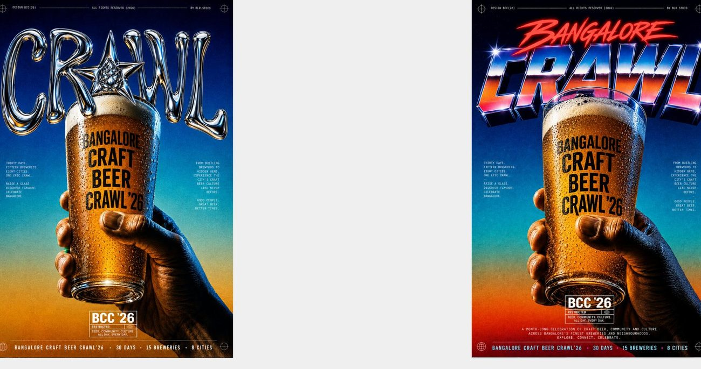

What I did
Built a moodboard of international beer-festival posters to set the tone: illustrated, screen-print, high energy. Developed six directions, each a complete three-poster set: illustrated festival, retro-print vintage, illustrated cityscape, vintage lockup, hand-drawn crowd and chrome-type. Explored a painterly, mural-scale route of raised glasses against Bangalore landmarks and fireworks. Resolved it into a two-colour screen-print hero poster with bilingual lockups.
Key decisions
1. Finished worlds, not sketches.
Each direction is a full three-poster set with its own type, palette and illustration logic. That makes the choice between real options, the way a client would actually need to judge them.
2. Two colours, screen-print style.
Blue and orange keep the final poster bold from across a room and nod to the genre's screen-print heritage.
3. Bangalore, not "a city".
Landmarks, autos and bunting, plus Kannada alongside English, make it unmistakably local. That sets it apart from generic festival posters.

Six directions, each a complete three-poster set: illustrated festival, retro-print vintage, hand-drawn crowd, chrome-type, and bilingual lockups. Every route carries its own type, palette and illustration logic, so the choice is between finished worlds rather than rough sketches.






A painterly direction
One route goes fully illustrated — a warm, large-scale painterly scene of raised glasses against Bangalore landmarks and fireworks, built to work as a mural-sized hero.


The poster
The directions resolve into a two-colour, screen-print hero poster: a raised glass framed by Bangalore landmarks, autos and bunting, with bilingual English and Kannada lockups and one bold message — 24–25 October 2026.


Result
A concept, but a complete one. It shows the whole arc of poster design, from references to six fully realised directions to one confident final, and a feel for local, bilingual identity. It's also the most striking visual work on the site, which makes it a strong hook for graphic designer roles.
Deliverables
Let's work together
Open to opportunities — full-time, freelance and fractional work.
Get in touch →